vignettes/mverse_intro_regressionmodelling.Rmd
mverse_intro_regressionmodelling.RmdThis vignette describes the workflow of linear regression modeling in the multiverse with the following functions:
formula_branch(), add_formula_branch:
create branches for regression formulas and add them to a
mverse object.lm_mverse(): fit a simple linear model with the given
formula branches and family branches.summary(): provide a summary of the fitted models in
different branches.spec_curve(): display the specification curve of a
model.We will use the Boston housing dataset {Harrison Jr and Rubinfeld (1978)} as an example.
This dataset has 506 observations on 14 variables. This dataset is
extensively used in regression analyses and algorithm benchmarks. The
objective is to predict the median value of a home (medv)
with the feature variables.
dplyr::glimpse(MASS::Boston) # using kable for displaying data in html
## Rows: 506
## Columns: 14
## $ crim <dbl> 0.00632, 0.02731, 0.02729, 0.03237, 0.06905, 0.02985, 0.08829,…
## $ zn <dbl> 18.0, 0.0, 0.0, 0.0, 0.0, 0.0, 12.5, 12.5, 12.5, 12.5, 12.5, 1…
## $ indus <dbl> 2.31, 7.07, 7.07, 2.18, 2.18, 2.18, 7.87, 7.87, 7.87, 7.87, 7.…
## $ chas <int> 0, 0, 0, 0, 0, 0, 0, 0, 0, 0, 0, 0, 0, 0, 0, 0, 0, 0, 0, 0, 0,…
## $ nox <dbl> 0.538, 0.469, 0.469, 0.458, 0.458, 0.458, 0.524, 0.524, 0.524,…
## $ rm <dbl> 6.575, 6.421, 7.185, 6.998, 7.147, 6.430, 6.012, 6.172, 5.631,…
## $ age <dbl> 65.2, 78.9, 61.1, 45.8, 54.2, 58.7, 66.6, 96.1, 100.0, 85.9, 9…
## $ dis <dbl> 4.0900, 4.9671, 4.9671, 6.0622, 6.0622, 6.0622, 5.5605, 5.9505…
## $ rad <int> 1, 2, 2, 3, 3, 3, 5, 5, 5, 5, 5, 5, 5, 4, 4, 4, 4, 4, 4, 4, 4,…
## $ tax <dbl> 296, 242, 242, 222, 222, 222, 311, 311, 311, 311, 311, 311, 31…
## $ ptratio <dbl> 15.3, 17.8, 17.8, 18.7, 18.7, 18.7, 15.2, 15.2, 15.2, 15.2, 15…
## $ black <dbl> 396.90, 396.90, 392.83, 394.63, 396.90, 394.12, 395.60, 396.90…
## $ lstat <dbl> 4.98, 9.14, 4.03, 2.94, 5.33, 5.21, 12.43, 19.15, 29.93, 17.10…
## $ medv <dbl> 24.0, 21.6, 34.7, 33.4, 36.2, 28.7, 22.9, 27.1, 16.5, 18.9, 15…mverse
In order to perform a linear regression in the multiverse, we create
a formula branch with all the models we wish to explore, add it the
mverse object, and execute lm on each universe
by calling lm_mverse.
Create a multiverse with mverse.
mv <- create_multiverse(MASS::Boston)We can explore models of the median value of home prices
medv on different combinations of the following explanatory
variables: proportion of adults without some high school education and
proportion of male workers classified as laborers (lstat),
average number of rooms per dwelling (rm), per capita crime
rate (crim), and property tax (tax).
Create the models with formula_branch()
formulas <- formula_branch(medv ~ log(lstat) * rm,
medv ~ log(lstat) * tax,
medv ~ log(lstat) * tax * rm)Add the models to the multiverse mv.
mv <- mv |> add_formula_branch(formulas)Fit lm() across mv using
lm_mverse().
lm_mverse(mv)By default, summary will give the estimates of
parameters for each model. You can also output other information by
changing the output parameter.
summary(mv)
## # A tibble: 16 × 10
## universe formulas_branch term estimate std.error statistic p.value conf.low
## <fct> <fct> <chr> <dbl> <dbl> <dbl> <dbl> <dbl>
## 1 1 formulas_1 (Int… -2.49e+1 6.66 -3.74 2.07e- 4 -3.80e+1
## 2 1 formulas_1 log(… 1.16e+1 2.61 4.45 1.05e- 5 6.50e+0
## 3 1 formulas_1 rm 1.10e+1 0.973 11.3 2.08e-26 9.05e+0
## 4 1 formulas_1 log(… -3.35e+0 0.405 -8.29 1.04e-15 -4.15e+0
## 5 2 formulas_2 (Int… 4.62e+1 2.83 16.3 1.89e-48 4.07e+1
## 6 2 formulas_2 log(… -9.60e+0 1.15 -8.31 9.04e-16 -1.19e+1
## 7 2 formulas_2 tax 1.35e-2 0.00750 1.80 7.23e- 2 -1.23e-3
## 8 2 formulas_2 log(… -6.35e-3 0.00278 -2.28 2.29e- 2 -1.18e-2
## 9 3 formulas_3 (Int… -1.88e+2 15.4 -12.2 3.36e-30 -2.18e+2
## 10 3 formulas_3 log(… 5.23e+1 6.70 7.80 3.73e-14 3.91e+1
## 11 3 formulas_3 tax 3.82e-1 0.0344 11.1 7.46e-26 3.15e-1
## 12 3 formulas_3 rm 3.10e+1 2.30 13.5 1.98e-35 2.65e+1
## 13 3 formulas_3 log(… -1.00e-1 0.0135 -7.40 5.89e-13 -1.27e-1
## 14 3 formulas_3 log(… -7.30e+0 1.06 -6.86 2.04e-11 -9.40e+0
## 15 3 formulas_3 tax:… -4.84e-2 0.00529 -9.16 1.32e-18 -5.88e-2
## 16 3 formulas_3 log(… 1.07e-2 0.00216 4.96 9.62e- 7 6.49e-3
## # ℹ 2 more variables: conf.high <dbl>, formulas_branch_code <fct>Changing output to df yields the degrees of
freedom table.
summary(mv, output = "df")
## # A tibble: 3 × 6
## universe formulas_branch p n.minus.p p.star formulas_branch_code
## <fct> <fct> <int> <int> <int> <fct>
## 1 1 formulas_1 4 502 4 medv ~ log(lstat) * rm
## 2 2 formulas_2 4 502 4 medv ~ log(lstat) * tax
## 3 3 formulas_3 8 498 8 medv ~ log(lstat) * tax * rmOther options include F (output = "f") statistics
summary(mv, output = "f")
## # A tibble: 3 × 6
## universe formulas_branch fstatistic numdf.f dendf.f formulas_branch_code
## <fct> <fct> <dbl> <dbl> <dbl> <fct>
## 1 1 formulas_1 482. 3 502 medv ~ log(lstat) * rm
## 2 2 formulas_2 341. 3 502 medv ~ log(lstat) * tax
## 3 3 formulas_3 368. 7 498 medv ~ log(lstat) * tax *…and
(output = "r").
# output R-squared by `r.squared` or "r"
summary(mv, output = "r")
## # A tibble: 3 × 5
## universe formulas_branch r.squared adj.r.squared formulas_branch_code
## <fct> <fct> <dbl> <dbl> <fct>
## 1 1 formulas_1 0.742 0.741 medv ~ log(lstat) * rm
## 2 2 formulas_2 0.671 0.669 medv ~ log(lstat) * tax
## 3 3 formulas_3 0.838 0.836 medv ~ log(lstat) * tax * rmFinally, we can display how the effect of number of rooms in a
dwelling log(lstat) using spec_curve.
spec_summary(mv, var = "log(lstat)") |>
spec_curve(label = "code") +
ggplot2::labs("Significant at 0.05")